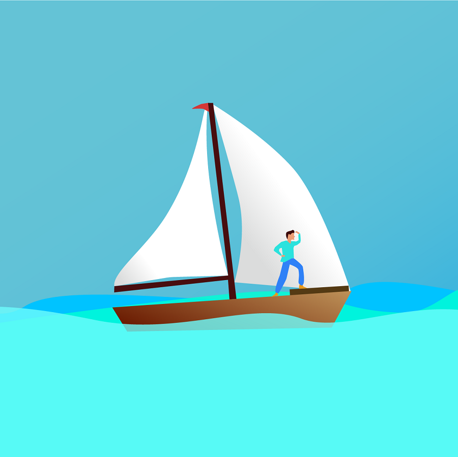
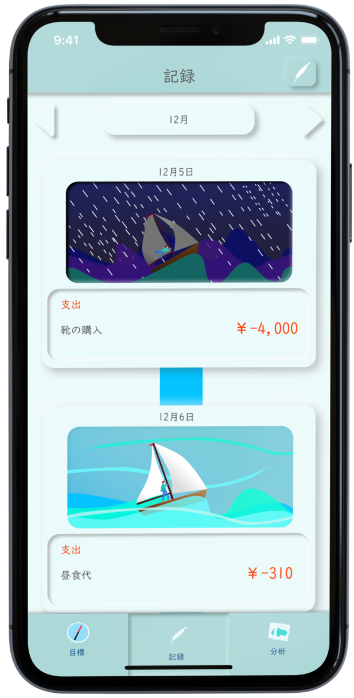
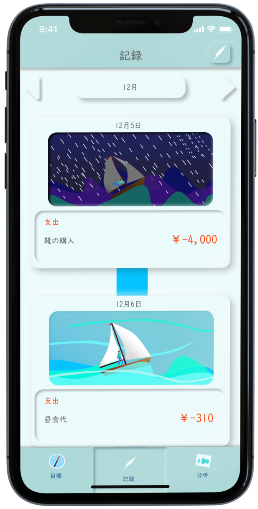
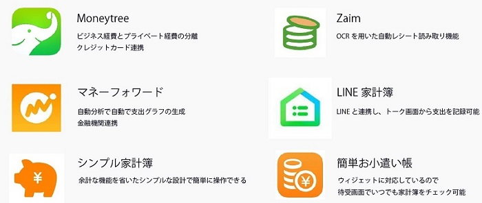

作品概要
機能

1.目標を決める
貯金目的・予算・期限などの目標を設定する。

2.貯金する
予算を使い切らないように収支を管理しつつ貯金を続ける。
 


3.達成する
目標を達成。収支グラフなどで分析を行い、次の目標を達成するための課題を見つける。

制作工程
ユーザーアンケート
家計簿アプリは記録が続かない・支出が多いのでお金がたまらない
家計簿アプリユーザー5人を対象にアンケートを実施。
記録のモチベーションが保てないという家計簿の問題点と、支出が多いことで貯金ができていないという問題が分かった。

競合調査
競合は記録の手間を省く工夫をしている
競合はOCRの導入やクレジットカード連携など、記録を楽にするための様々な工夫を施していた。
アイデア発散
家計簿と貯金に関するアイデア発散
家計簿の課題と、貯金の課題の二つの問題点を軸にアイデア発散を行った。

アイデア収束
ユーザーにストーリーを与える
記録を楽しくする工夫と、目標を可視化して支出を減らすというアイデアを収束し、貯金するユーザーをアプリ内で表現することで問題を解決できるのではないかと考えた。
コンセプト
家計簿アプリらしくない家計簿アプリ
イラストを用いて貯金の現状をストーリー性を付け足すことで見ていて楽しい記録したくなる「家計簿らしくない家計簿アプリ」をコンセプトにデザインを行った。
ペルソナ
家計簿アプリの記録が続かない大学生
市場調査を行った結果、40代以上は紙媒体の家計簿を使用しており、家計簿アプリの主なユーザーは20～30代だということが判明した。
家計簿アプリの記録が続かず、つい無駄遣いをしてしまう大学生をペルソナに設定した。

ジャーニーマップ・ユーザーストーリー
無駄遣いをしてしまう大学生の支出を減らす
voyageで自分の状況を一目で分かるようにすることで、趣味や食事などのちょっとした支出を減らすことができるのではないかと考えた。

ラフ・ワイヤー
ラフを何度も描き、最適なデザインを探す
最適なイラストとアプリの構成を見つけ出すため、何度もラフスケッチとワイヤー作成を行った。

イラスト
フラットデザインでイラストを作成
航海をイメージしたイラストを制作した。ゲームではなく家計簿アプリなので、紙に書いたような手書き感のあるフラットデザインイラストを制作した。

UI
フラットデザインとニューモフィズム
平面のイラストと凹凸のあるニューモフィズムを組み合わせることで、イラストの存在感とUIの見やすさを両立させた。

色
航海をイメージした色
UIには航海をイメージした青と、見やすさを配慮した白の中間色を使用した。 イラストには航海をイメージしたさわやかなカラーパレットを使用した。

結果とブラッシュアップ
ブラッシュアップ
インターン選考に落ち、満足するまで作り直した
初回制作で選考に落ちてしまった。
作品の完成度の低さは自分でも理解しており、満足することができなかったので何度もブラッシュアップを行った。
友人とブラッシュアップをしていた際にニューモフィズムの存在を知り、それをヒントにデザインを行い、現在のデザインに至った。

| トップに戻る | 次の作品を見る |